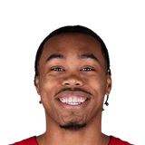

“… He loves it there. Yes. He won a championship. … That’s never come from us that there’s a change… Because of the pandemic, because the Raptors missed the playoffs, there’s been a lot of speculation around (about a trade), but it’s not because of Pascal or anything he’s said. Or even the organization. I think that’s just the chatter that picks up going into an offseason.”

What Todd Ramasar has said about Pascal Siakam
Every quote from Todd Ramasar about Pascal Siakam in the archive, newest first. Each one links to its original source.
Quotes per season
2021-222021-22
2021-22
2 quotesRamasar said.
“It starts with having good communication and a great relationship with the team and management, and communication. And it’s understanding that, because this is a business, at any point you can be traded… But in this situation, knowing that it was more so speculation than anything else, it’s having those conversations with the client. It’s also the team reassuring the player, in this case Pascal, and then you move forward and stay in control of the things you have control over.”
Related
- Everyone on Pascal Siakam50 quotes
- Todd Ramasar on everyone6 quotes
- Masai Ujiri on Pascal Siakam8 quotes
 Nick Nurse on Pascal Siakam7 quotes
Nick Nurse on Pascal Siakam7 quotes- Rick Carlisle on Pascal Siakam5 quotes
 Kyle Lowry on Pascal Siakam4 quotes
Kyle Lowry on Pascal Siakam4 quotes Myles Turner on Pascal Siakam2 quotes
Myles Turner on Pascal Siakam2 quotes
Scottie Barnes on Pascal Siakam2 quotes- Todd Ramasar on Andrew Nembhard2 quotes
 Tyrese Haliburton on Pascal Siakam2 quotes
Tyrese Haliburton on Pascal Siakam2 quotes